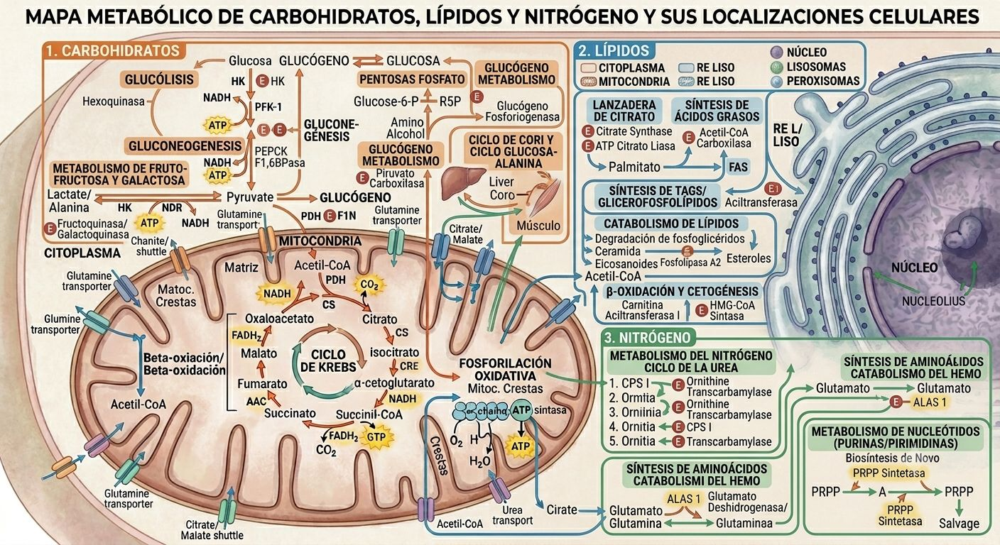

Carbohidratos
Lípidos
Nitrógeno

Arrastra un recuadro para moverlo · usa la esquina para redimensionar
cursor: x:– y:–
Pega estos valores en cada ruta de ROUTES (campos x, y, w, h). Las coordenadas son píxeles de la imagen (lienzo 1408 × 768); x, y es el centro del recuadro.
Infografía Original · Visualización Interactiva Optimizada